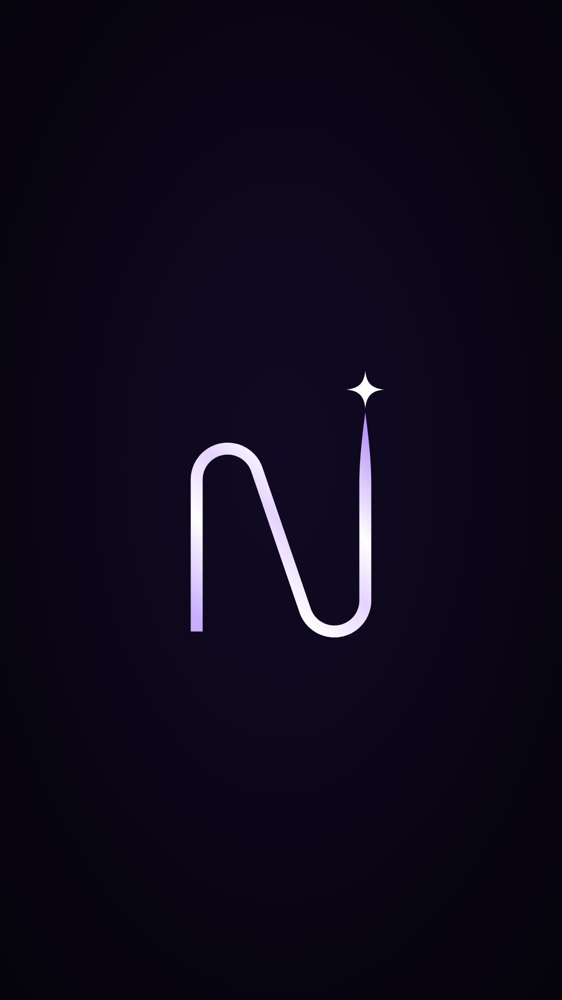
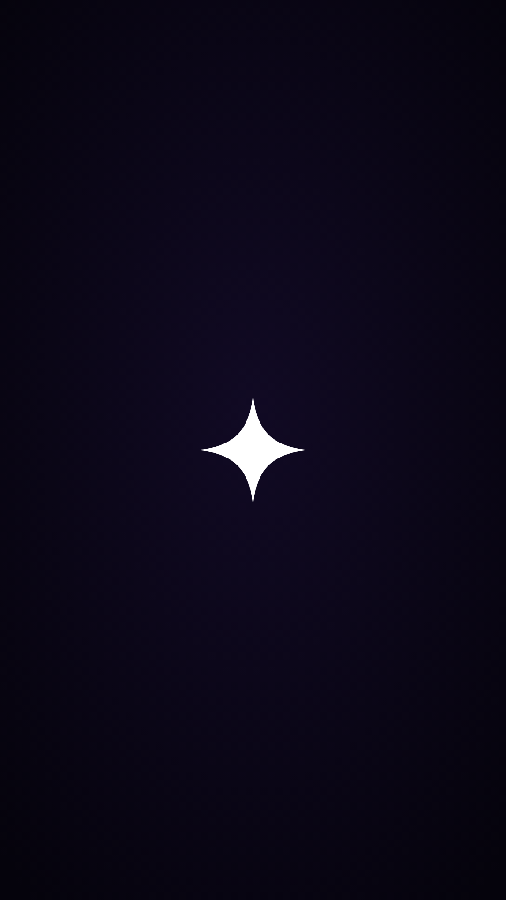

nxtlvl edits · logo kit
One fine line, the right stem climbing past the left and ending in the star. Pearl on rich black for the profile, Ink and violet on light backgrounds, single colour where only one will do.

